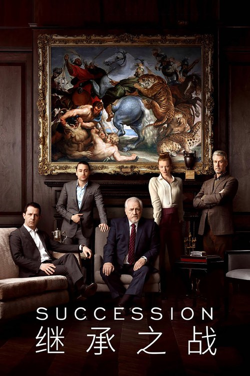
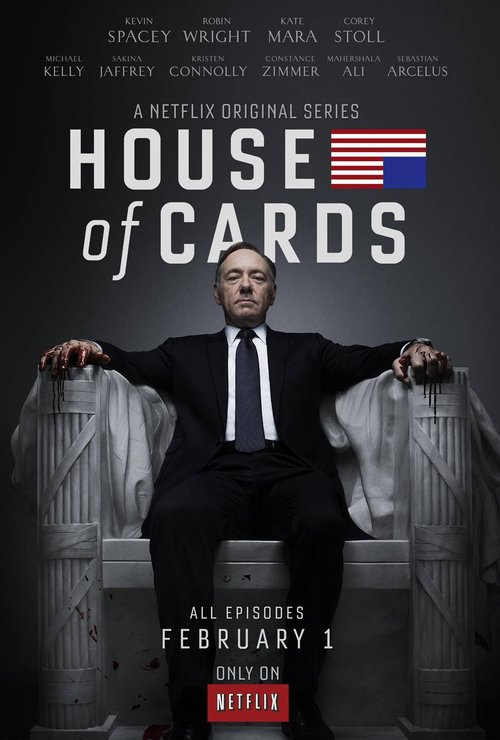
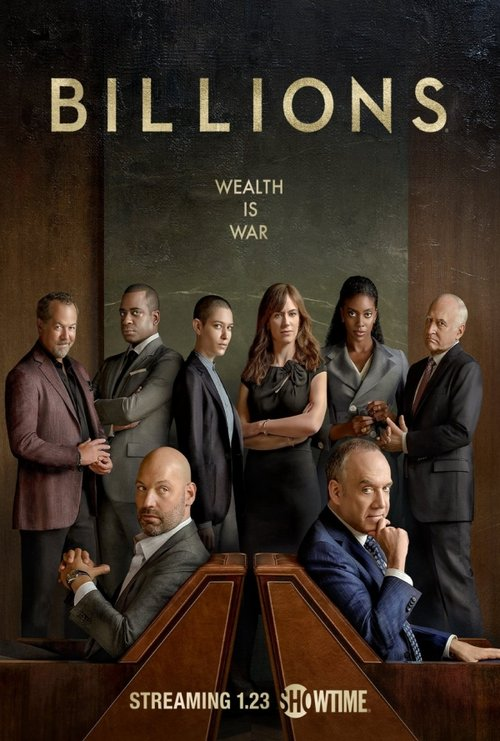
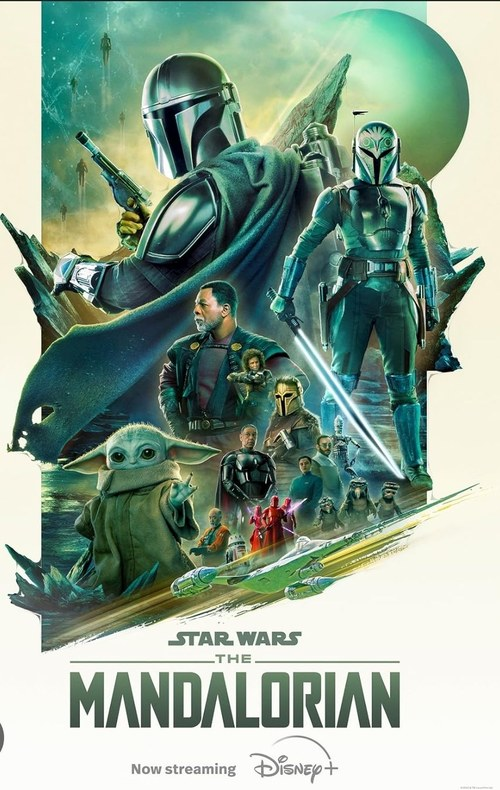

 ★ 8.4 HBO2018–20234 季 继承之战 Succession 传媒帝国 Roy 家族的继承权争夺，权力的游戏没有赢家。 剧情23 位人物 已完结 人物关系图 ↗ 长图 文字版
★ 8.8 AMC2022–20232 季 万神殿 Pantheon 意识上传成 AI 之后，人还是人吗？ 剧情 · 动作 · 科幻 · 动画23 位人物 已完结 人物关系图 ↗ 长图 文字版 选择题测验 · 20 道 ↗
 ★ 9.3 Netflix2013–20186 季 纸牌屋 House of Cards Frank 与 Claire 的夺权之路，一切为了权力。 剧情 · 惊悚26 位人物 已完结 人物关系图 ↗ 长图 文字版
 ★ 8.9 Showtime2016–20237 季 亿万 Billions 对冲基金大佬与联邦检察官的金钱战争，财富即战争。 剧情22 位人物 已完结 人物关系图 ↗ 长图 文字版
 ★ 9.2 Disney+2019–20233 季 曼达洛人 The Mandalorian 赏金猎人与一个孩子的旅程，信条即道路。 科幻 · 奇幻20 位人物 已完结 人物关系图 ↗ 长图 文字版
★ 7.9 腾讯视频2019–20242 季 庆余年 Joy of Life 范闲从儋州少年到京都权臣，查身世、斗权贵、揭开叶轻眉之死。 剧情 · 古装22 位人物 追更中 人物关系图 ↗ 长图 文字版
★ 7.6 Paramount+2025–已播 1 季 黑帮领地 MobLand 伦敦两大黑帮家族为芬太尼地盘开战，清道夫 Harry 在尸体与谎言之间替家族续命。 剧情 · 犯罪25 位人物 追更中 人物关系图 ↗ 长图 文字版
★ 7.8 Apple TV+2023–已播 3 季 末日地堡 Silo 144 层地下地堡，朱丽叶追查真相、当上市长，S3 前传线揭开地堡起源与 1 号地堡之谜。 剧情 · 科幻38 位人物 追更中 人物关系图 ↗ 长图 文字版